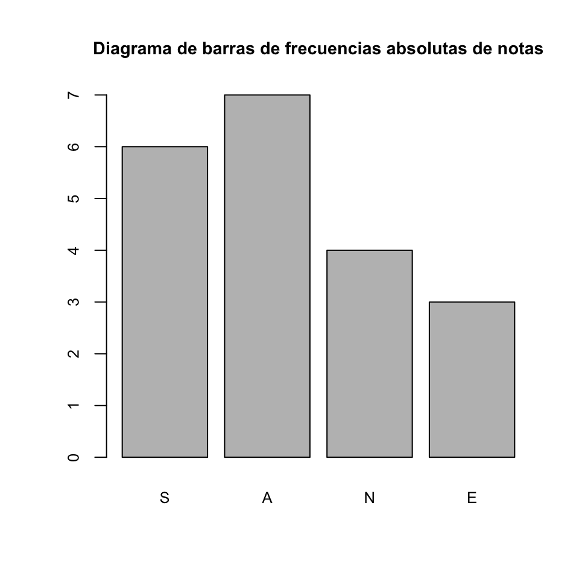
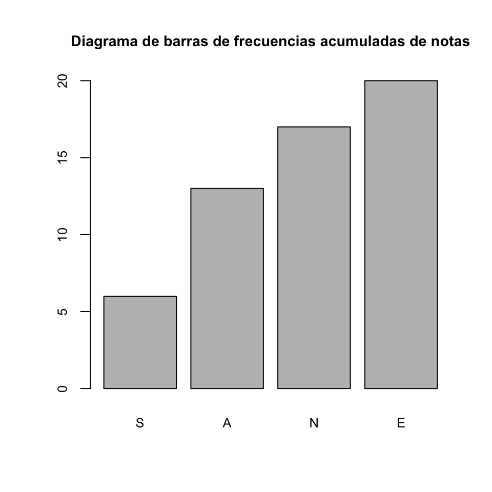
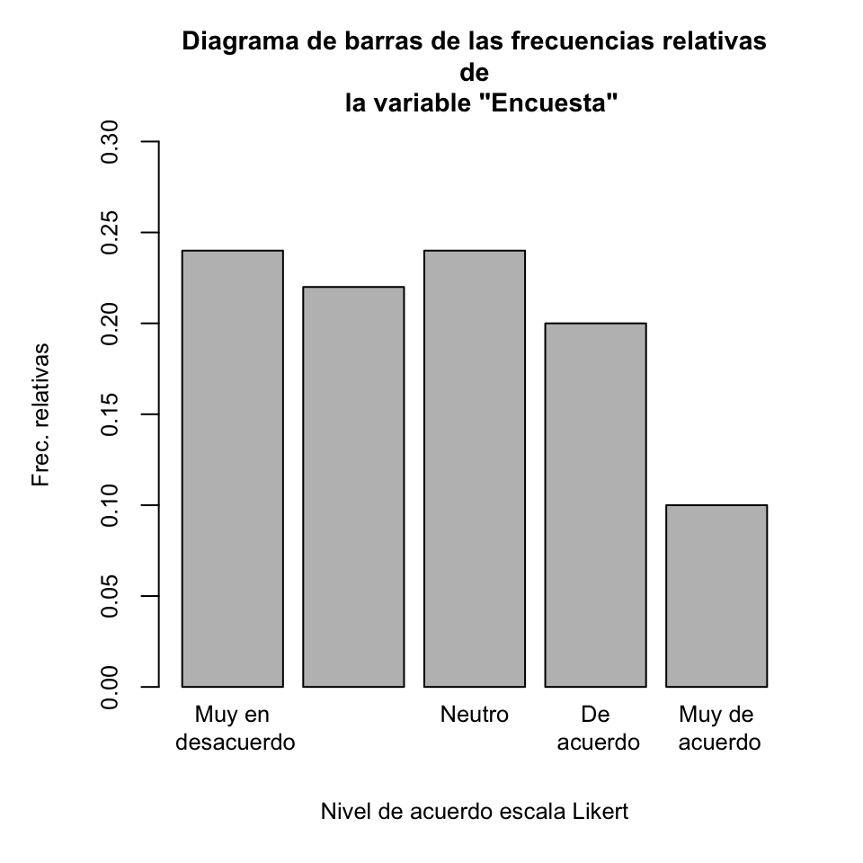
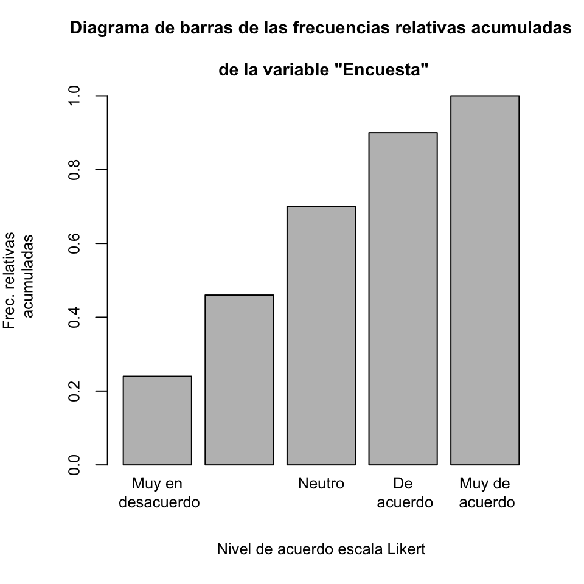
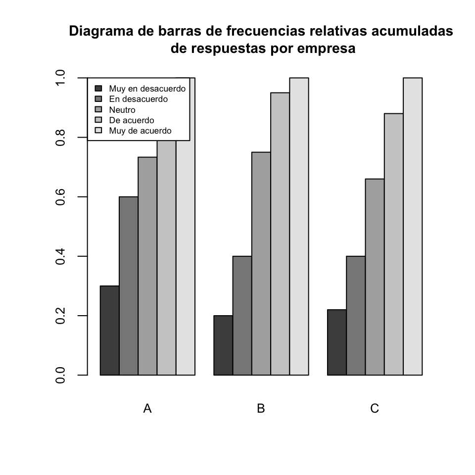

Lección 9 Descripción de datos ordinales
Los datos ordinales son parecidos a los cualitativos, en el sentido de que son cualidades de objetos o individuos. Su diferencia con los datos cualitativos está en que las características que expresan los datos ordinales tienen un orden natural que permite acumular observaciones, es decir, contar cuántas hay por debajo de cada nivel. Un caso frecuente son las escalas tipo Likert , que se usan para conocer la opinión de un grupo de personas sobre un tema determinado.32
9.1 Frecuencias para datos ordinales
Cuando trabajamos con datos ordinales, el orden de los niveles de los datos permite calcular no sólo las frecuencias absolutas y relativas que veíamos en la lección anterior, y que para variables ordinales se definen del mismo modo, sino también frecuencias acumuladas . Es decir, no sólo podemos contar cuántas veces hemos observado un cierto dato, sino también cuántas veces hemos observado un dato menor o igual que él.
En esta lista hay 6 \(S\), 7 \(A\), 4 \(N\) y 3 \(E\): éstas serían las frecuencias absolutas de las calificaciones en esta muestra de estudiantes. Por lo que se refiere a sus frecuencias absolutas acumuladas :
- Hay 6 estudiantes que han obtenido \(S\) o menos: la frecuencia absoluta acumulada de \(S\) es 6.
- Hay 13 estudiantes que han obtenido \(A\) o menos (6 \(S\) y 7 \(A\)): la frecuencia absoluta acumulada de \(A\) es 13.
- Hay 17 estudiantes que han obtenido \(N\) o menos (6 \(S\), 7 \(A\) y 4 \(N\)): la frecuencia absoluta acumulada de \(N\) es 17.
- Hay 20 estudiantes que han obtenido \(E\) o menos (todos): la frecuencia absoluta acumulada de \(E\) es 20.
La frecuencia relativa acumulada de cada calificación es la fracción del total de estudiantes que representa su frecuencia absoluta acumulada: por ejemplo, la frecuencia relativa acumulada de notables es la proporción de estudiantes que han sacado un notable o menos, y, por lo tanto, es igual a la frecuencia absoluta acumulada de \(N\) dividida por el número total de estudiantes. Así pues, para calcular las frecuencias relativas acumuladas de las calificaciones en esta muestra, tenemos que dividir sus frecuencias absolutas acumuladas entre \(20\): \[ S: \frac{6}{20}=0.3,\quad A: \frac{13}{20}=0.65,\quad N: \frac{17}{20}=0.85,\quad E: \frac{20}{20}=1. \]
En general, supongamos que efectuamos \(n\) observaciones
\[ x_1,x_2,\ldots,x_n \] de un cierto tipo de datos ordinales, cuyos posibles niveles ordenados son
\[
l_1<l_2<\cdots <l_k.
\] Por lo tanto, cada una de estas observaciones \(x_j\) es igual a algún \(l_i\). Diremos que estas observaciones forman una variable ordinal . En el ejemplo anterior, tendríamos que los niveles son \[
S<A<N<E,
\] que \(n=20\), y que \(x_1,\ldots,x_{20}\) son las calificaciones obtenidas por los estudiantes de la muestra.
Con estas notaciones:
Las definiciones de
frecuencias absolutas\(n_j\) yrelativas\(f_j\), para cada nivel \(l_j\), son las mismas que en una variable cualitativa.La
frecuencia absoluta acumuladadel nivel \(l_j\) en esta variable ordinal es el número \(N_j\) de observaciones \(x_i\) tales que \(x_i\leq l_j\). Es decir, es \[N_j=\sum\limits_{k=1}^j n_k.\]La
frecuencia relativa acumuladadel nivel \(l_j\) en esta variable ordinal es la fracción (en tanto por uno) \(F_j\) de observaciones \(x_i\) tales que \(x_i\leq l_j\). Es decir, \[ F_j=\dfrac{N_j}{n}=\sum\limits_{k=1}^j f_k. \]
9.2 Descripción de datos ordinales con R
Recordemos de la Lección 4 que la función cumsum, aplicada a un vector, calcula el vector de sus sumas acumuladas. Sobre una tabla de contingencia tiene el mismo efecto, y por lo tanto podemos usarla para calcular la tabla de frecuencias acumuladas (absolutas o relativas) de un vector, aplicándola a su tabla de frecuencias (absolutas o relativas, según corresponda).
R.
notas=ordered(c("A","A","N","S","S","A","N","E","A","A","S","S",
"S","A","E","N","N","E","S","A"), levels=c("S","A","N","E"))
notas## [1] A A N S S A N E A A S S S A E N N E S A
## Levels: S < A < N < Etable(notas) #Frec. absolutas## notas
## S A N E
## 6 7 4 3cumsum(table(notas)) #Frec. absolutas acumuladas## S A N E
## 6 13 17 20cumsum(prop.table(table(notas))) #Frec. relativas acumuladas## S A N E
## 0.30 0.65 0.85 1.00barplot(table(notas), main="Diagrama de barras de frecuencias absolutas de notas")
barplot(cumsum(table(notas)), main="Diagrama de barras de frecuencias acumuladas de notas") Las dos últimas instrucciones producen los diagramas de la Figura ??.
{r F1702,fig.cap="Diagramas de barras de frecuencias absolutas y de frecuencias absolutas acumuladas de las notas del Ejemplo \@ref(ex:ex1701bis)."} knitr::include_graphics(c("images/notasnoacum1.png","images/notasacum1.png"))
Para calcular las frecuencias relativas acumuladas hemos usado la instrucción cumsum(prop.table(table(notas))), que va sumando las frecuencias relativas. También las podríamos haber calculado dividiendo las frecuencias absolutas acumuladas por el número de datos, usando una de las instrucciones siguientes: cumsum(table(notas))/length(notas) o cumsum(table(notas)/length(notas)). Pero no podíamos usar prop.table(cumsum(table(notas))).
cumsum(prop.table(table(notas)))## S A N E
## 0.30 0.65 0.85 1.00cumsum(table(notas))/length(notas)## S A N E
## 0.30 0.65 0.85 1.00cumsum(table(notas)/length(notas))## S A N E
## 0.30 0.65 0.85 1.00prop.table(cumsum(table(notas)))## S A N E
## 0.1071429 0.2321429 0.3035714 0.3571429Pensad qué ha entendido R que queríamos hacer con esta última instrucción.
%%%%%%%%%%%%%%%%%%%%%%%%%%%%%%%%%%%%%%%%%%%%%%%%%%%
datos=c(4,4,2,1,3,3,4,1,1,3,5,2,5,2,1,2,3,2,1,1,2,2,4,2,1,1,1,
2,4,5,3,4,2,4,4,3,1,3,3,2,1,5,4,1,2,2,3,3,3,1,4,3,5,1,5,1,2,5,5,
2,4,5,1,4,3,1,1,4,3,3,4,4,1,2,1,3,4,1,4,2,2,4,1,3,5,3,3,3,2,2,3,
3,3,2,4,1,1,4,3,2)
Nombres.compl=c("Muy en\n desacuerdo","En\n desacuerdo",
"Neutro\n ","De\n acuerdo","Muy de\n acuerdo")
barplot(prop.table(table(datos)), ylim=c(0, 0.30),
main="Diagrama de barras de las frecuencias relativas\n de
la variable \"Encuesta\"", names=Nombres.compl,
xlab="Nivel de acuerdo escala Likert", ylab="Frec. relativas")
barplot(cumsum(prop.table(table(datos))), ylim=c(0, 1),
main="Diagrama de barras de las frecuencias relativas acumuladas
\n de la variable \"Encuesta\"", names=Nombres.compl,
xlab="Nivel de acuerdo escala Likert", ylab="Frec. relativas
acumuladas") En los diagramas de barras, hemos representado los niveles con un texto más descriptivo. Para hacerlo, hemos definido un vector Nombres.compl con sus nuevos nombres en el orden correspondiente (y en dos líneas cada uno para ocupar menos espacio horizontal), y entonces en los barplot hemos especificado names=Nombres.compl.
Tot.difs \(<\) Difs \(<\) Pars \(<\) Muy.pars \(<\) Iguales.
data.aux=data.frame(Nivel=c("Tot.difs","Difs","Pars","Muy.pars","Iguales"),Significado=c("Totalmente diferentes","Diferentes","Parecidas","Muy parecidas","Totalmente Iguales"))
kableExtra::kable(data.aux,cap="Niveles de semejanza de comunidades microbianas.")| Nivel | Significado |
|---|---|
| Tot.difs | Totalmente diferentes |
| Difs | Diferentes |
| Pars | Parecidas |
| Muy.pars | Muy parecidas |
| Iguales | Totalmente Iguales |
Los valores obtenidos en el estudio han sido los siguientes:
Difs, Pars, Difs, Muy.pars, Muy.pars, Muy.pars, Iguales, Pars, Difs, Tot.difs,
Muy.pars, Iguales, Muy.pars, Pars, Pars, Muy.pars, Iguales, Difs, Difs, Pars,
Muy.pars, Muy.pars, Muy.pars, Difs, Pars, Pars, Iguales, Iguales, Muy.pars,
Iguales, Difs, Tot.difs, Pars, Muy.pars, Iguales, Difs, Muy.pars, Muy.pars,
Iguales, Tot.difsPara estudiar las frecuencias acumuladas de los niveles de semejanza en este estudio, entraremos los datos en un factor ordenado con los niveles ordenados de manera adecuada.
> datos=scan(sep=",", what="character") #Vamos a copiar del texto y pegar los valores
1: Difs,Pars,Difs,Muy.pars,Muy.pars,Muy.pars,Iguales,Pars,Difs,Tot.difs,Muy.pars,Iguales,Muy.pars,Pars,Pars,Muy.pars,Iguales,Difs,Difs,Pars,Muy.pars,Muy.pars,Muy.pars,Difs,Pars,Pars,Iguales,Iguales,Muy.pars,Iguales,Difs,Tot.difs,Pars,Muy.pars,Iguales,Difs,Muy.pars,Muy.pars,Iguales,Tot.difs
41:
Read 40 itemssem.com=ordered(datos, levels=c("Tot.difs","Difs","Pars","Muy.pars","Iguales")) #Los datos, como factor ordenado
AbsFr=table(sem.com) #Ponemos nombre a la tabla de frecuencias absolutas
AbsFr## sem.com
## Tot.difs Difs Pars Muy.pars Iguales
## 3 8 8 13 8sem.com## [1] Difs Pars Difs Muy.pars Muy.pars Muy.pars Iguales
## [8] Pars Difs Tot.difs Muy.pars Iguales Muy.pars Pars
## [15] Pars Muy.pars Iguales Difs Difs Pars Muy.pars
## [22] Muy.pars Muy.pars Difs Pars Pars Iguales Iguales
## [29] Muy.pars Iguales Difs Tot.difs Pars Muy.pars Iguales
## [36] Difs Muy.pars Muy.pars Iguales Tot.difs
## Levels: Tot.difs < Difs < Pars < Muy.pars < Igualesprop.table(AbsFr) #Tabla de frecuencias relativas## sem.com
## Tot.difs Difs Pars Muy.pars Iguales
## 0.075 0.200 0.200 0.325 0.200sem.com## [1] Difs Pars Difs Muy.pars Muy.pars Muy.pars Iguales
## [8] Pars Difs Tot.difs Muy.pars Iguales Muy.pars Pars
## [15] Pars Muy.pars Iguales Difs Difs Pars Muy.pars
## [22] Muy.pars Muy.pars Difs Pars Pars Iguales Iguales
## [29] Muy.pars Iguales Difs Tot.difs Pars Muy.pars Iguales
## [36] Difs Muy.pars Muy.pars Iguales Tot.difs
## Levels: Tot.difs < Difs < Pars < Muy.pars < Igualescumsum(AbsFr) #Tabla de frecuencias absolutas acumuladas## Tot.difs Difs Pars Muy.pars Iguales
## 3 11 19 32 40cumsum(prop.table(AbsFr)) #Tabla de frecuencias relativas acumuladas## Tot.difs Difs Pars Muy.pars Iguales
## 0.075 0.275 0.475 0.800 1.000Nombres.Completos=c("Totalmente\n diferentes","Diferentes\n",
"Parecidas\n ","Muy\n parecidas","Totalmente\n iguales")barplot(cumsum(prop.table(AbsFr)), names=Nombres.Completos,
main="Diagrama de barras de frecuencias relativas acumuladas")Figura 9.1: Diagrama de barras de frecuencias relativas acumuladas de semejanzas de microbiotas a una comunidad modelo.
La instrucción barplot produce el diagrama de barras de la Figura 9.1.
Para calcular frecuencias acumuladas en una tabla multidimensional, hay que aplicar a la tabla la función cumsum mediante la función apply. En este caso concreto, la sintaxis de la instrucción sería apply(tabla, MARGIN=..., FUN=cumsum), donde el valor de MARGIN ha de ser el de la dimensión en la que queremos acumular las frecuencias: 1 si queremos calcular las frecuencias acumuladas por filas, 2 si las queremos calcular por columnas, etc. Esta construcción tiene algunas particularidades, que vamos a ilustrar con un ejemplo.
Ejemplo 9.5 Supongamos que las 100 respuestas a la encuesta en el Ejemplo ?? en realidad provienen de técnicos de tres empresas diferentes, A, B y C, de manera que las 30 primeras son de técnicos de A, las 20 siguientes, de técnicos de B, y las 50 últimas, de técnicos de C. Nos interesa estudiar la distribución de las respuestas según la empresa.
Vamos a organizar estos datos en un data frame. Para que sea más fácil visualizar la información que nos interesa, es conveniente que las filas de las tablas de frecuencias correspondan a las empresas. Por lo tanto, al definir el data frame, entraremos como primera variable la de las empresas; de esta manera, éstas aparecerán en las filas al aplicarle la funcióntable.
respuestas=ordered(c(4,4,2,1,3,3,4,1,1,3,5,2,5,2,1,2,3,2,1,1,2,
2,4,2,1,1,1,2,4,5,3,4,2,4,4,3,1,3,3,2,1,5,4,1,2,2,3,3,3,1,4,3,5,
1,5,1,2,5,5,2,4,5,1,4,3,1,1,4,3,3,4,4,1,2,1,3,4,1,4,2,2,4,1,3,5,
3,3,3,2,2,3,3,3,2,4,1,1,4,3,2), levels=1:5)
empresas=rep(c("A","B","C"), times=c(30,20,50))
df_encuesta=data.frame(empresas,respuestas)
str(df_encuesta)## 'data.frame': 100 obs. of 2 variables:
## $ empresas : Factor w/ 3 levels "A","B","C": 1 1 1 1 1 1 1 1 1 1 ...
## $ respuestas: Ord.factor w/ 5 levels "1"<"2"<"3"<"4"<..: 4 4 2 1 3 3 4 1 1 3 ...head(df_encuesta,5)## empresas respuestas
## 1 A 4
## 2 A 4
## 3 A 2
## 4 A 1
## 5 A 3table(df_encuesta)## respuestas
## empresas 1 2 3 4 5
## A 9 9 4 5 3
## B 4 4 7 4 1
## C 11 9 13 11 6Para calcular la tabla de frecuencias absolutas acumuladas de las respuestas por empresa, y como las empresas definen las filas de la tabla anterior, hemos de usar apply con MARGIN=1.
apply(table(df_encuesta), MARGIN=1, FUN=cumsum)## empresas
## respuestas A B C
## 1 9 4 11
## 2 18 8 20
## 3 22 15 33
## 4 27 19 44
## 5 30 20 50¡La tabla se ha traspuesto! Resulta que cuando se aplica apply a una table bidimensional, R intercambia, si es necesario, filas por columnas en el resultado para que la dimensión de la tabla resultante en la que se haya aplicado la función sea la de las columnas. Por lo tanto, para volver a tener las empresas en las filas, hemos de trasponer el resultado de apply.
t(apply(table(df_encuesta), MARGIN=1, FUN=cumsum))## respuestas
## empresas 1 2 3 4 5
## A 9 18 22 27 30
## B 4 8 15 19 20
## C 11 20 33 44 50Vamos ahora a calcular la tabla de frecuencias relativas acumuladas de las respuestas por empresa. Para ello, y en una sola instrucción, primero calculamos la tabla de frecuencias relativas por filas; a continuación, las acumulamos por filas con apply y cumsum; y, finalmente, como ya estamos avisados, trasponemos el resultado
t(apply(prop.table(table(df_encuesta), margin=1), MARGIN=1,
FUN=cumsum))## respuestas
## empresas 1 2 3 4 5
## A 0.30 0.6 0.7333333 0.90 1
## B 0.20 0.4 0.7500000 0.95 1
## C 0.22 0.4 0.6600000 0.88 1Vamos ahora a dibujar el diagrama de barras por bloques de esta tabla. Como queremos que las barras de este diagrama se agrupen por empresas, hemos de aplicar barplot a la tabla sin trasponer.
Tabla=apply(prop.table(table(df_encuesta), margin=1), MARGIN=1,
FUN=cumsum)
barplot(Tabla, beside=TRUE, legend=TRUE,
main="Diagrama de barras de frecuencias relativas
acumuladas\n de respuestas por empresa")De esta manera obtenemos el diagrama de barras de la izquierda de la Figura 9.2. Como vemos, la leyenda se superpone sobre las barras de la última empresa. Para resolver este problema, situaremos la leyenda en la esquina superior izquierda. Además, vamos a sustituir en la leyenda los valores de las respuestas por sus significados, y para que quepa, reduciremos el tamaño del texto. El resultado será el diagrama de la derecha de la Figura 9.3.
barplot(Tabla, beside=TRUE,
legend.text=c("Muy en desacuerdo", "En desacuerdo","Neutro","De acuerdo","Muy de acuerdo"),
main="Diagrama de barras de frecuencias relativas acumuladas\n de respuestas por empresa",
args.legend=list(x="topleft", cex=0.55)) pppppppppppppppppppppp
knitr::include_graphics(c("images/figenc1.png","images/figenc2.png"))Figura 9.2: Diagramas de barras de frecuencias relativas acumuladas de respuestas por empresa en el Ejemplo @ ref(ex:encuestacum).
InsectSprays, que viene predefinido en R. Veamos su estructura.
head(InsectSprays)## count spray
## 1 10 A
## 2 7 A
## 3 20 A
## 4 14 A
## 5 14 A
## 6 12 Astr(InsectSprays)## 'data.frame': 72 obs. of 2 variables:
## $ count: num 10 7 20 14 14 12 10 23 17 20 ...
## $ spray: Factor w/ 6 levels "A","B","C","D",..: 1 1 1 1 1 1 1 1 1 1 ...table(InsectSprays$count)##
## 0 1 2 3 4 5 6 7 9 10 11 12 13 14 15 16 17 19 20 21 22 23 24 26
## 2 6 4 8 4 7 3 3 1 3 3 2 4 4 2 2 4 1 2 2 1 1 1 2#help(InsectSprays)Con el help(InsectSprays) nos enteramos de que la variable numérica count contiene los números de insectos que se encontraron en diferentes superficies agrícolas, todas de la misma área, tratadas con el insecticida indicado por el factor spray.
Vamos a convertir la variable count en una variable ordinal que agrupe las entradas de la variable original en niveles
<
La manera más sencilla de llevarlo a cabo es usando la función cut, que estudiaremos en detalle en la
Lección ??. Por ahora es suficiente saber que la instrucción
cut(InsectSprays$count, breaks=c(0,5,10,15,20,Inf), right=FALSE,
labels=c("0-4","5-9","10-14","15-19","20-..."))## [1] 10-14 5-9 20-... 10-14 10-14 10-14 10-14 20-... 15-19 20-...
## [11] 10-14 10-14 10-14 15-19 20-... 10-14 15-19 10-14 15-19 15-19
## [21] 15-19 20-... 5-9 10-14 0-4 0-4 5-9 0-4 0-4 0-4
## [31] 0-4 0-4 0-4 0-4 0-4 0-4 0-4 5-9 10-14 5-9
## [41] 0-4 0-4 5-9 5-9 5-9 5-9 0-4 0-4 0-4 5-9
## [51] 0-4 5-9 0-4 5-9 0-4 0-4 0-4 0-4 5-9 0-4
## [61] 10-14 5-9 15-19 20-... 15-19 15-19 10-14 10-14 20-... 20-...
## [71] 20-... 10-14
## Levels: 0-4 5-9 10-14 15-19 20-...<InsectSprays$count en intervalos de extremos los puntos especificados en el argumento breaks; el parámetro right=FALSE sirve para indicar que los puntos de corte pertenecen al intervalo a su derecha, e Inf indica \(\infty\). Por tanto, los intervalos en los que esta instrucción agrupa los números de insectos son
\[ [0,5), [5,10), [10,15), [15,20), [20,\infty). \]
El resultado de la instrucción es un factor que tiene como niveles estos intervalos, identificados con las etiquetas especificadas en el parámetro labels. Como nosotros vamos a usar estos intervalos como niveles de una variable ordinal, además convertiremos este factor en ordenado.
Los cambios lo realizaremos en una copia de InsectSprays.
IS = InsectSprays
IS$count.rank = ordered(
cut(IS$count,breaks = c(0, 5, 10, 15, 20, Inf),
right = FALSE, labels = c("0-4", "5-9", "10-14", "15-19", "20-...")
))
str(IS)## 'data.frame': 72 obs. of 3 variables:
## $ count : num 10 7 20 14 14 12 10 23 17 20 ...
## $ spray : Factor w/ 6 levels "A","B","C","D",..: 1 1 1 1 1 1 1 1 1 1 ...
## $ count.rank: Ord.factor w/ 5 levels "0-4"<"5-9"<"10-14"<..: 3 2 5 3 3 3 3 5 4 5 ...Nos interesa estudiar la distribución de los números de insectos según el tipo de insecticida. Por lo tanto, vamos a calcular las tablas bidimensionales de frecuencias relativas y relativas acumuladas de los intervalos de números de insectos en cada nivel de Spray, y las representaremos por medio de diagramas de barras.
La tabla de frecuencias absolutas de los pares (insecticida, intervalo de números de insectos) se puede obtener aplicando table al data frame formado por las dos últimas columnas de IS.
Tab=table(IS[,2:3])
Tab## count.rank
## spray 0-4 5-9 10-14 15-19 20-...
## A 0 1 7 1 3
## B 0 1 4 5 2
## C 11 1 0 0 0
## D 5 6 1 0 0
## E 8 4 0 0 0
## F 0 1 4 3 4Freq.rel=round(prop.table(Tab, margin=1), 3) #Frecuencias relativas por Spray
Freq.rel## count.rank
## spray 0-4 5-9 10-14 15-19 20-...
## A 0.000 0.083 0.583 0.083 0.250
## B 0.000 0.083 0.333 0.417 0.167
## C 0.917 0.083 0.000 0.000 0.000
## D 0.417 0.500 0.083 0.000 0.000
## E 0.667 0.333 0.000 0.000 0.000
## F 0.000 0.083 0.333 0.250 0.333Freq.rel.acum=round(apply(prop.table(Tab, margin=1), MARGIN=1,
FUN=cumsum), 3) #Frecuencias relativas acumuladas
Freq.rel.acum## spray
## count.rank A B C D E F
## 0-4 0.000 0.000 0.917 0.417 0.667 0.000
## 5-9 0.083 0.083 1.000 0.917 1.000 0.083
## 10-14 0.667 0.417 1.000 1.000 1.000 0.417
## 15-19 0.750 0.833 1.000 1.000 1.000 0.667
## 20-... 1.000 1.000 1.000 1.000 1.000 1.000t(Freq.rel.acum)## count.rank
## spray 0-4 5-9 10-14 15-19 20-...
## A 0.000 0.083 0.667 0.750 1
## B 0.000 0.083 0.417 0.833 1
## C 0.917 1.000 1.000 1.000 1
## D 0.417 0.917 1.000 1.000 1
## E 0.667 1.000 1.000 1.000 1
## F 0.000 0.083 0.417 0.667 1cyan.col=c("cyan4","cyan3","cyan2","cyan1","cyan") #Colores azulones para las barrasbarplot(t(Freq.rel), beside=TRUE, legend=TRUE, ylim=c(0,1), col=cyan.col, main="Diagrama de barras de frecuencias relativas\n de números de insectos por insecticida")
barplot(Freq.rel.acum, beside=TRUE, legend=TRUE,col=cyan.col, main="Diagrama de barras de frecuencias relativas acumuladas\n de números de insectos por insecticida", args.legend = list(x="topleft",cex=0.8))Las dos últimas instrucciones producen los diagramas de barras de la Figura 9.3. Observamos que los insecticidas C, D y E son los más efectivos, porque producen mayores números de campos con pocos insectos, mientras que B y F son poco efectivos.
knitr::include_graphics(c("images/Insect1.png","images/Insect2.png"))
Figura 9.3: Diagramas de barras de frecuencias relativas y relativas acumuladas de números de insectos por tipo de insecticida en el data frame InsectSprays.
9.3 Guía rápida de funciones
orderedsirve para construir factores ordenados. Sus parámetros principales se pueden consultar en la guía de la Lección 4.tablecalcula la tabla de frecuencias absolutas de un vector o un factor.tsirve para trasponer una tabla bidimensional.prop.tablecalcula la tabla de frecuencias relativas de un vector o un factor a partir de su tabla de frecuencias absolutas. Sus parámetros principales se pueden consultar en la guía de la Lección 8.cumsumcalcula las sumas acumuladas de un vector.apply(tabla, MARGIN=..., FUN=función)aplica lafuncióna los niveles de las variables de latablaque se especifican enMARGIN. Para calcular frecuencias acumuladas en tablas multidimensionales, se usaFUN=cumsum.barplotdibuja el diagrama de barras de un vector o un factor a partir de una tabla de frecuencias. Sus parámetros principales se pueden consultar en la guía de la Lección 8.
9.4 Ejercicio
La tabla de datos http://aprender.uib.es/Rdir/Notas2011A.txt contiene las notas obtenidas por los estudiantes de los grados de Biología y Bioquímica de la UIB en un examen de la asignatura Matemáticas I del curso 2011-12 (no aparecen los no presentados, por lo que no hay valores NA). Las variables que contiene la tabla para cada estudiante son: su nota numérica (sobre 10), su calificación alfabética (S significa Suspenso, A , Aprobado, N , Notable, y E , Sobresaliente) y su grupo (BLM para el grupo de las mañanas de Biología, BLT para el grupo de las tardes de Biología, y BQ para Bioquímica).
Definid un data frame con esta tabla, de manera que su variable
NotasLetrasea un factor ordenado, con las calificaciones alfabéticas ordenadas según su orden natural \(S<A<N<E\). Comprobad constryheadque el data frame obtenido tiene la estructura deseada.Comprobad que las notas alfabéticas se corresponden con las nota numéricas: \([0,5[\) corresponde a S; \([5,7[\), a A; \([7,9[\), a N; y \([9,10]\), a E. Si hay algún error, corregid la nota alfabética.
Calculad la tabla bidimensional de frecuencias relativas de las calificaciones alfabéticas por grupo, con las frecuencias relativas calculadas dentro de los grupos. Redondead a 2 cifras decimales. Los grupos tienen que definir las filas, y las notas, las columnas.
Calculad la tabla bidimensional de frecuencias relativas acumuladas de las calificaciones alfabéticas por grupo, con las frecuencias relativas calculadas dentro de los grupos. Redondead a 2 cifras decimales. Los grupos tienen que definir las filas, y las notas, las columnas.
Dibujad un diagrama de barras por bloques de las frecuencias relativas de las calificaciones alfabéticas dentro de cada grupo: los bloques han de corresponder a los grupos. Poned un título al gráfico y añadid una leyenda que explique cada barra qué calificación representa. Podéis poner colores, cambiar los nombres, etc. para mejorar su aspecto.
Dibujad un diagrama de barras por bloques de las frecuencias relativas acumuladas de las calificaciones alfabéticas dentro de cada grupo: los bloques han de corresponder a los grupos. Como antes, poned un título al gráfico y añadid una leyenda que explique cada barra qué calificación representa. Podéis poner colores, cambiar los nombres, etc. para mejorar su aspecto.
¿Podéis extraer alguna conclusión de las tablas y los gráficos anteriores?
Para más información, podéis consultar http://es.wikipedia.org/wiki/Escalas_Likert .↩